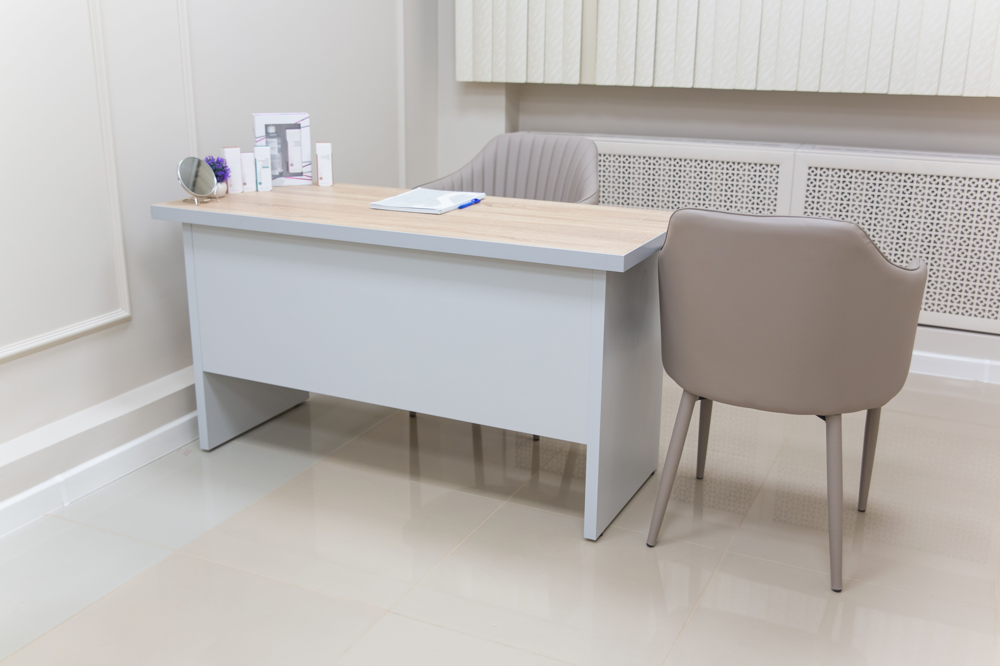
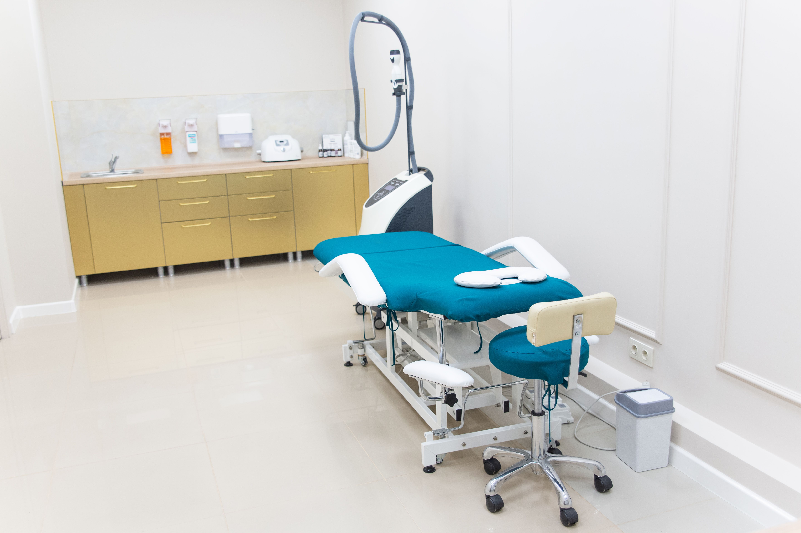
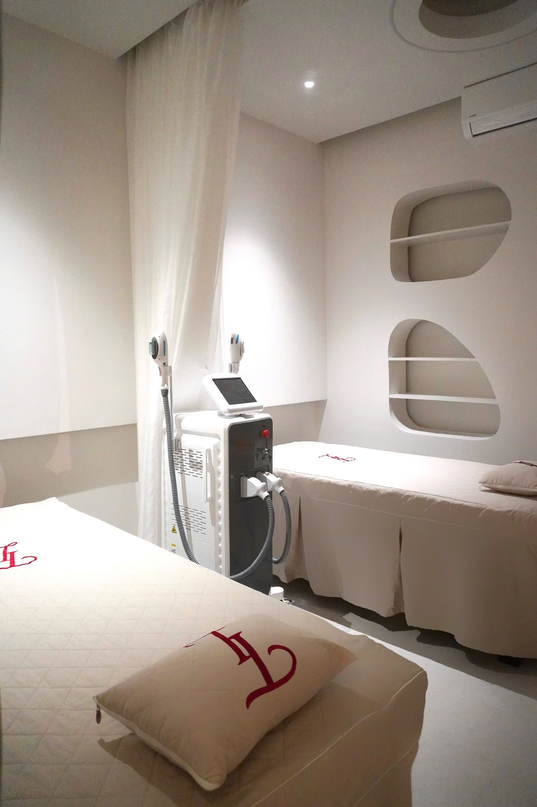

About
院について
Director

院長ご挨拶
木村 誠一
院長 / 柔道整復師
整体院やすらぎは、2006年の開業以来、地域の皆様の身体のお悩みに寄り添ってまいりました。痛みの原因は、表面に現れている場所とは別のところにあることがほとんどです。
私たちは身体全体のバランスを丁寧に評価し、根本原因にアプローチする施術を行っています。「先生に会いたくて来た」——そう言っていただける信頼関係を、何よりも大切にしています。
- 柔道整復師（国家資格）
- 整体師歴 18年
- 骨盤調整セラピスト認定
Philosophy
私たちが大切にしていること
01
対話を重ねる
施術前のカウンセリングを大切に。お悩みや生活習慣をしっかりお聞きします。
02
根本から整える
その場しのぎではなく、痛みが起きにくい身体づくりを一緒に目指します。
03
通いやすさ
強引な勧誘は一切しません。あなたのペースで無理なく通える環境を。
Inside
清潔感のある待合スペース
専用の施術ルーム
落ち着いた個室空間
院内のご紹介



LINEかんたん無料相談
はじめての方こそ、
はじめての方こそ、
LINEでご相談を
「自分の症状でも大丈夫？」という不安は、来院前にLINEで解消できます。スタッフが一つひとつお答えします。無料・勧誘なしで安心です。
LINE友だち追加して相談するLINE ID：@yasuragi-seitai
1「友だち追加」をタップ
2お悩みの症状をメッセージで送信
3スタッフが回答・そのままご予約も可能
18年の経験
3,200+改善症例数
96%症状改善率